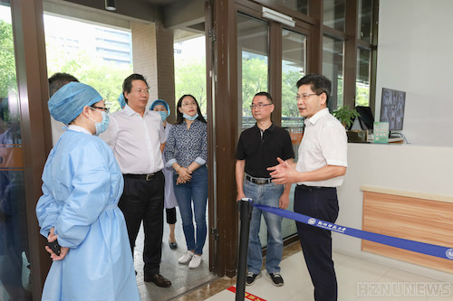

学校召开疫情防控工作部署会
8月9日下午，学校召开疫情防控工作部署会。校党委书记陈春雷出席会议并讲话，校党委副书记应飚主持会议，副校长戴丽敏、党委委员姜建忠出席。
在认真收听收看全省教育系统疫情防控工作视频会议后，学校防控办就近期学校疫情防控相关工作，师生排查情况及潜在隐患和风险点作了通报，并就学校拟出台的疫情防控新措施和相关决定作了说明。
陈春雷在会上指出，当前，全球范围内疫情仍然呈现扩散趋势，国内多个省市出现疫情，传播速度快，形势复杂严峻。就进一步做好校园疫情防控工作，陈春雷提出七点要求。一要在思想上高度重视。要坚决克服麻痹思想、侥幸心理、松劲心态，正视高校自身特点，理解学校疫情防控措施，切实增强疫情防控的思想自觉和行动自觉。二要在管控上更加严格。要全面升级校园管控措施，落实落细中央、省市的要求和举措，防控疫情在校园内扩散蔓延。三要在相互协作上更加紧密。学校疫情防控工作领导小组成员单位之间，成员单位与学院之间要积极沟通、精准对接、加强配合，共同高效做好入校审核、秋季开学等相关工作的疫情防控。四要在明确责任上更加到位。要进一步落实各方主体责任，做好疫情防控宣传教育，严把人员进校和活动举办审批关，确保校园安全。五要在工作谋划上更加科学。要提前做好校园环境整治及疫情防控物资准备工作，科学谋划秋季开学、军训等工作，引导师生“应接尽接”新冠疫苗，确保开学平稳有序。六要在监督问责上更加精准。要加强督查，对疫情防控工作履职不力的单位和个人，查出一例，问责一例，坚决依法依规予以严肃处理。七要在关爱师生上更加到位。要对校内隔离人员、身处中高风险地区师生及在疫情防控工作岗位上默默付出的教职员工等，给予关心关爱。他强调，与会人员工作要更加用心，思考要更加周全，要共同努力引导师生自觉加强个人防护，带领师生把各项疫情防控措施落到实处，确保校园安全稳定。